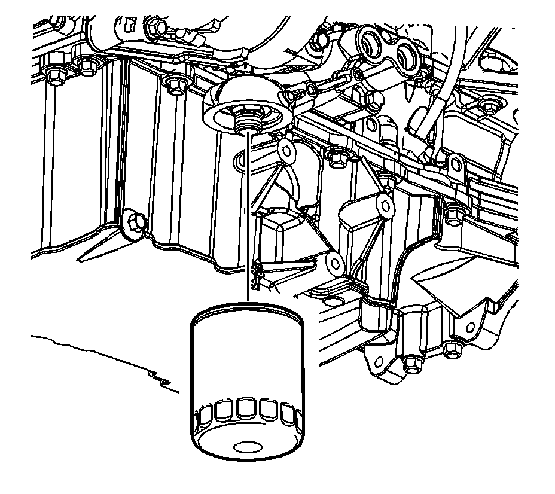
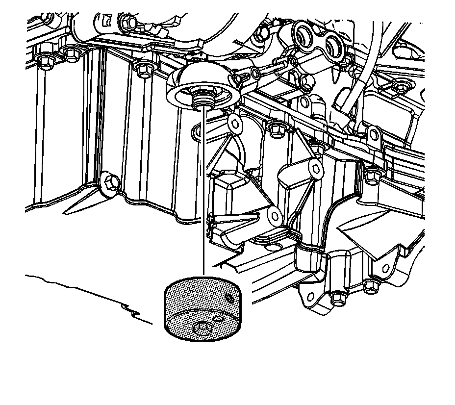
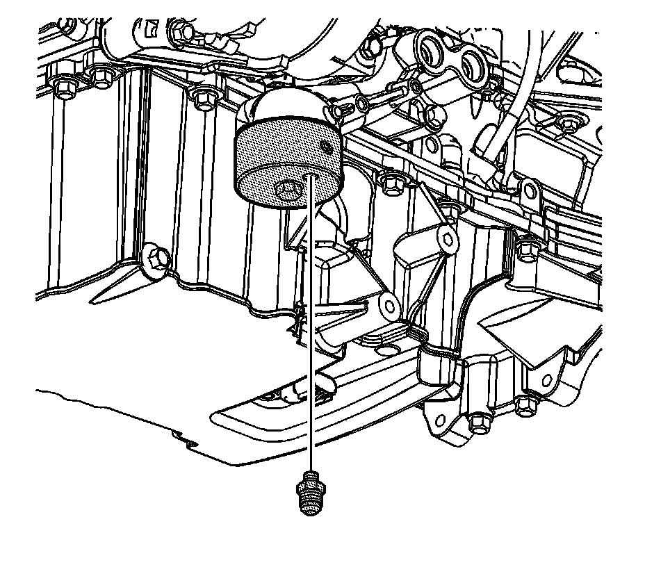
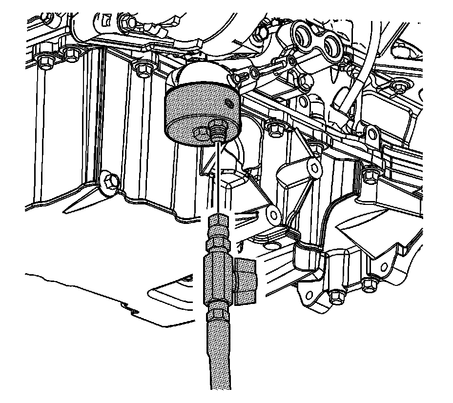
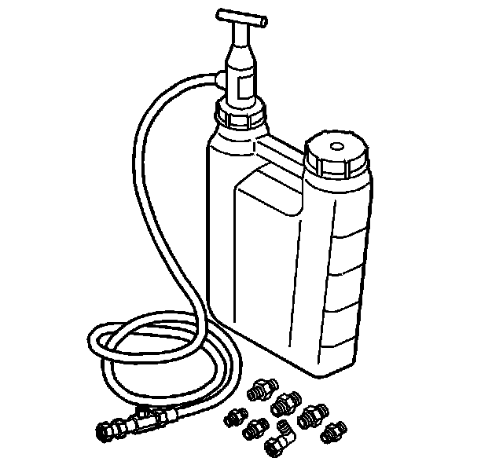

142. Engine Prelubing
Engine Prelubing
Tools Required
* J 42907 Oil Pressure Tester
* J 45299 Engine Preluber

1. Remove the engine oil filter.

2. Install the J 42907 onto the oil filter adapter.

3. Install the 1/8 NPT fitting from the J 45299 into the port on the J 42907 .

4. Install the J 45299 flexible hose to the fitting.

5. Open the valve of the J 45299 .
Important: A constant and continuous flow of clean engine oil is required in order to properly prime the engine.
6. Pump the handle of the J 45299 in order to flow a minimum of 1-1.9 liters (1-2 quarts) of fresh clean engine oil. Observe the flow of engine oil through the flexible hose and into the engine assembly.
7. Close the valve of the J 45299 .
8. Remove the J 45299 flexible hose.
9. Remove the fitting from the J 42907 .
10. Remove the J 42907 from the oil filter adapter.
11. Ensure the NEW oil filter is filled with clean fresh engine oil.
Notice: Refer to Fastener Notice (Fastener Notice) .
12. Install the NEW oil filter.
Tighten the oil filter to 30 N.m (22 lb ft).